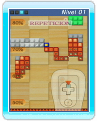

13 |
Repeticiones |
 |
● Guardar repeticiones Si seleccionas Guardar repetición en el panel de resultados, cada jugador registrado podrá guardar una repetición por cada modo de juego (Círculo ○, Barra ／, y Cuadrado □). Podrás registrar un máximo de 10 jugadores, así que el número máximo de repeticiones que podrás guardar será 30. Si deseas conservar una repetición, añádela a favoritas. ● Ver repeticiones Para ver una repetición, selecciona Repeticiones en la pantalla de configuración del juego, agarra el Mii de la repetición que desees ver y suéltalo sobre una ventana de juego. También podrás ver tus repeticiones si seleccionas Repeticiones en el menú principal. Nota: Las repeticiones largas se acortarán al guardarlas, por lo que comenzarán a partir de un punto determinado de la partida.
Para detener una repetición, apunta hacia la ventana donde se esté reproduciendo la repetición, oprime
● Opciones del menú de repetición
|
 y selecciona Volver en el menú de pausa.
y selecciona Volver en el menú de pausa.
 |
 |
 |